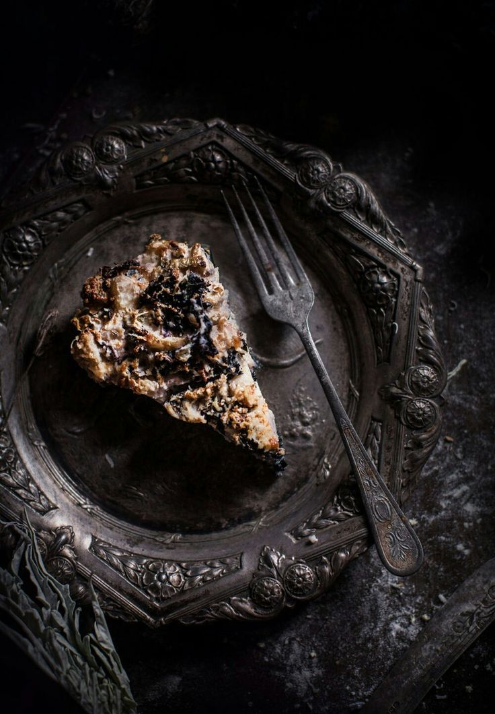

Apple Pie Cake

Description
A delightful fusion of classic apple pie and moist cake layers, creating a
delicious and visually appealing dessert.
Ingredients
- 4 cups peeled, sliced apples (such as Granny Smith)
- 1 cup granulated sugar
- 1 teaspoon ground cinnamon
- 2 cups all-purpose flour
- 2 teaspoons baking powder
- 1/2 teaspoon salt
- 1 cup unsalted butter, softened
- 2 cups packed brown sugar
- 4 large eggs
- 1 teaspoon vanilla extract
- 1 cup milk
Steps:
-
Preheat the oven to 350°F (175°C) and grease a 9x13 inch baking dish.
-
In a bowl, combine the sliced apples, granulated sugar, and cinnamon. Set
aside.
- In another bowl, whisk together the flour, baking powder, and salt.
-
In a large mixing bowl, cream together the butter and brown sugar until
light and fluffy. Add the eggs one at a time, beating well after each
addition. Stir in the vanilla extract.
-
Gradually add the dry ingredients to the wet ingredients, alternating with
the milk. Begin and end with the dry ingredients.
-
Spread half of the batter into the prepared baking dish. Arrange the apple
mixture evenly over the batter. Top with the remaining batter.
-
Bake for 45-50 minutes or until a toothpick inserted into the center comes
out clean.
-
Allow the pie cake to cool before serving. Optionally, dust with powdered
sugar or serve with a scoop of vanilla ice cream.